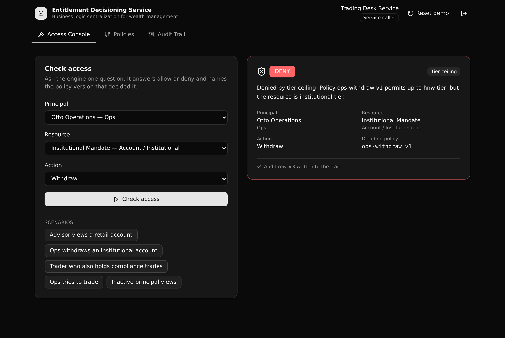

Internal apps call one endpoint to ask "can this role take this action on this account?" It answers allow or deny, names the exact policy version that decided it, and writes an audit row.

Each policy row is one version of one rule. Exactly one version per key is active, and a human can read and audit the active set.
The waterfall checks a baseline grant, an explicit deny, a tier ceiling, then segregation of duties, and returns the rule that fired.
Activate a new policy version and the next decision changes. The audit trail keeps the version that decided every past request.
A policy_admin curates rules, a service_caller only calls the engine, a viewer is read only. Enforced with per-endpoint preconditions.
| Method | Path | What it enforces |
|---|---|---|
| POST | /api:eds_auth/login | Verify a service account and mint a bearer token. |
| POST | /api:eds_decision/check-access | The rule engine. Guarded to service_caller or policy_admin. Writes an audit row. |
| GET | /api:eds_decision/decisions | The audit trail, newest first. |
| GET | /api:eds_decision/decisions/{id} | One decision joined to the policy version that decided it. |
| GET | /api:eds_policies/list | Every policy version, grouped by key. |
| POST | /api:eds_policies/version | Create a new draft version. policy_admin only. |
| PATCH | /api:eds_policies/activate/{id} | Activate a version and retire the prior one. policy_admin only. |
| POST | /api:eds_ops/seed | Reset the demo data to a known baseline. |
Paste this into your coding agent (Claude Code, Cursor, or similar):
Clone https://github.com/xano-scratch/entitlement-decisioning-service and set it up as my own Xano app. Run: npm install, then npx xanots login, then npm run xano:deploy. After it deploys, POST to /api:eds_ops/seed on the printed backend URL to load the demo data, then open the frontend URL. Read xano/index.ts and node_modules/@xanots/sdk/llms.txt first so you author against the real SDK, and keep frontend/src/lib/api.ts as the single contract.
Or run it yourself:
git clone https://github.com/xano-scratch/entitlement-decisioning-service.git cd entitlement-decisioning-service npm install npx xanots login npm run xano:deploy